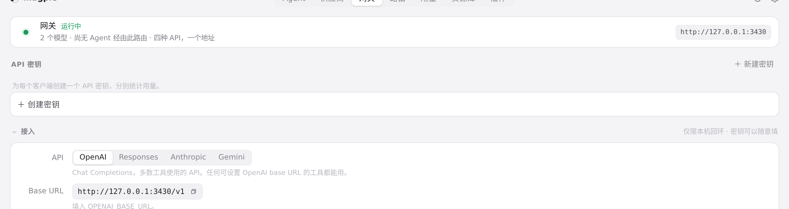
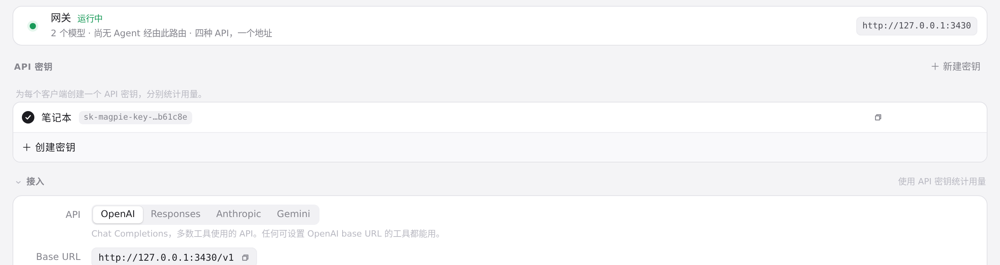
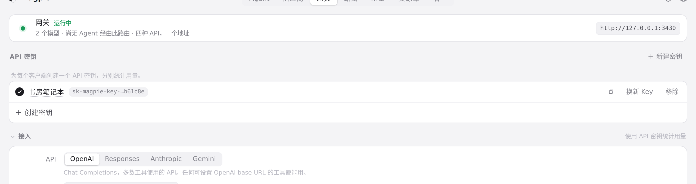
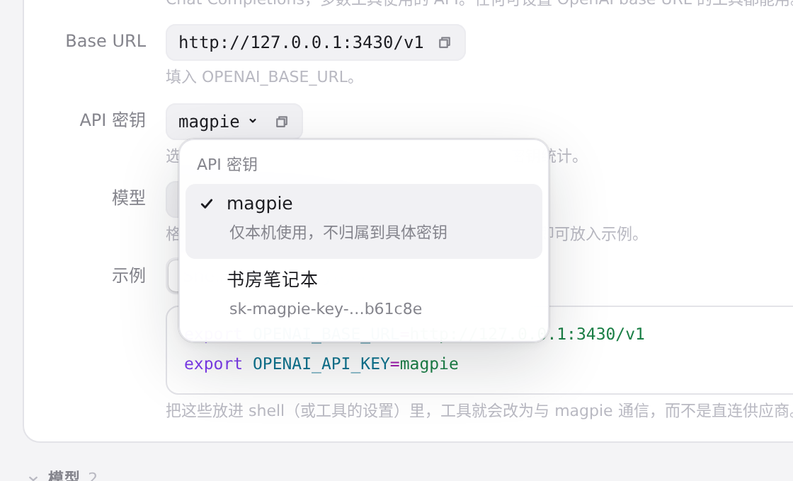
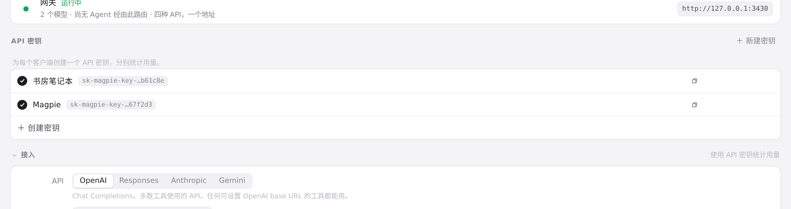

#344 界面预览
commit f2f4d42 · 回到 PR · 网关页新增「API 密钥」区块，可创建、复制、重命名、停用/启用、换新和移除命名调用方密钥，接入示例可选择地址与密钥；设置页的局域网共享行删掉了重复的 API 密钥行；用量页按调用方密钥分组、筛选并导出。
红线是鼠标走过的轨迹，红色圆环是一次点击；底部文字是这一步在做什么。空格暂停，← → 逐段查看。

网关页新建命名 API 密钥 · 网关页的「API 密钥」区域，尚未创建命名密钥
网关页新建命名 API 密钥 · 新建密钥的内联表单

网关页新建命名 API 密钥 · 创建后的密钥列表

网关页新建命名 API 密钥 · 重命名后的密钥行

接入示例选用所选密钥 · 展开的密钥下拉
接入示例选用所选密钥 · 选择密钥后的接入示例
设置页的局域网共享行与默认密钥 · 设置 · 局域网共享行
设置页的局域网共享行与默认密钥 · 开启共享后的局域网行

设置页的局域网共享行与默认密钥 · 回到网关页后的密钥列表